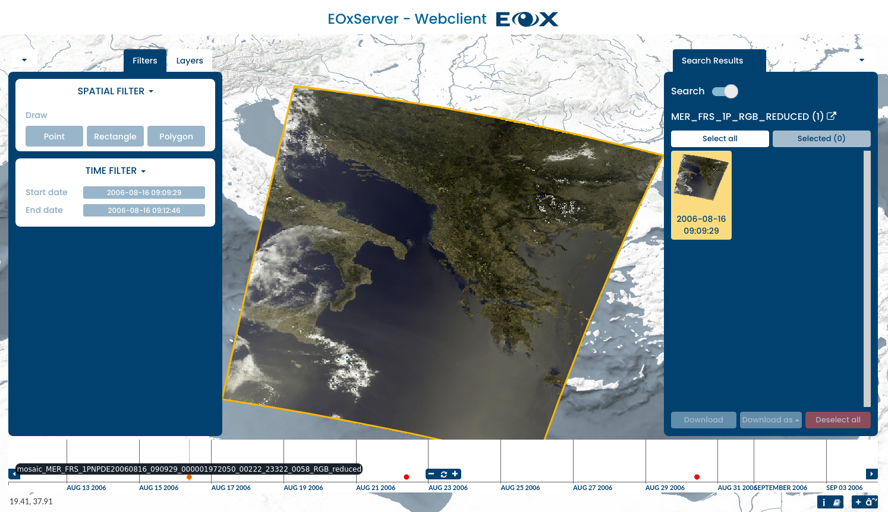
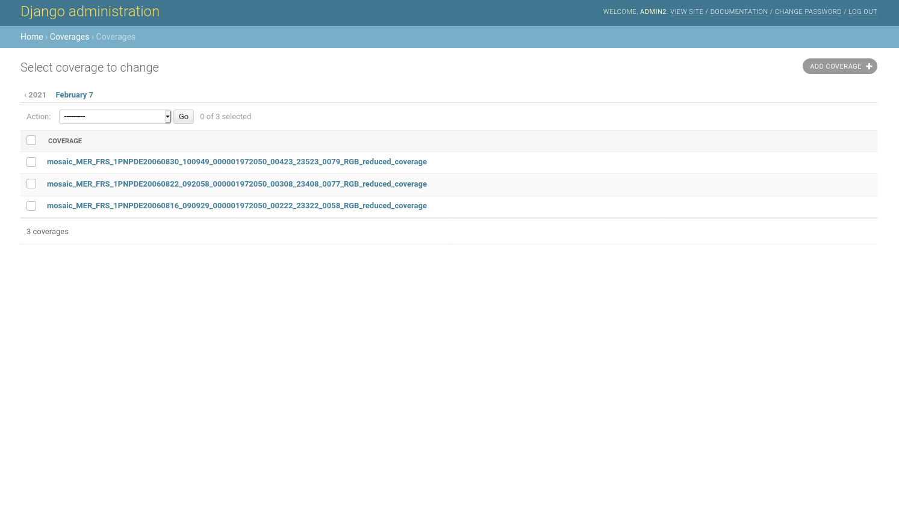

Guide de démarrage rapide EOxServer¶
EOxServer est un serveur pour présenter les archives massives de données et les métadonnées d’Earth Observation (EO) via Open Standards. Il s’appuie sur une pile de logiciels open source qui comprend Python, MapServer, Django/GeoDjango, GDAL, PROJ et les bases de données SpatiaLite ou PostGIS.
Ce guide décrit comment :
Utilisez le client Web pour afficher, filtrer, échantillonner et télécharger des données EO
Utilisez le client Admin pour inspecter les archives de données EO
Démarrer EoxServer¶
Choisissez . Cela lance un navigateur montrant l’instance de démonstration disponible à l’adresse http://localhost/eoxserver/

Travailler avec le client Web¶
Cliquez sur le lien Web Client pour ouvrir le client EOxServer intégré.
Au sein de ce client, vous pouvez explorer le contenu de l’instance EOxServer. L’instance de démonstration est remplie de scènes ENVISAT MERIS.

Le client se compose de la vue de la carte et des widgets qui contiennent les interactions principales. La zone principale est le widget de carte du client avec un ensemble de jeux de données déjà affichés. En bas, vous trouverez le widget timeslider, qui vous permet d’explorer le contenu dans la dimension temporelle.

Le widget Sélection de couches peut être élargi en cliquant sur la roue à rouage en haut à gauche et il vous permet d’activer ou de désactiver la visibilité et de configurer le rendu des couches. En outre, vous pouvez afficher ou masquer la superposition des rues et sélectionner la couche d’arrière-plan. L’onglet Filtres de ce widget permet d’interroger différentes valeurs spatiales et temporelles.
{kind=link}
Comme pour une carte, vous pouvez zoomer et déplacer la vue à l’heure d’intérêt actuellement visible et sélectionner un moment d’intérêt en dessinant sur la zone contenant les points rouges. Vous pouvez également planer sur un point pour voir l’identifiant du jeu de données. En cliquant sur le point, la carte zoome automatiquement sur l’emprise du jeu de de données.

Lorsqu’un filtre spatial est activé, vous pouvez dessiner une boîte englobante, un polygone ou un point directement sur la carte. La forme dessinée est utilisée pour les requêtes dans l’outil de téléchargement.

Vous pouvez obtenir plus d’informations sur les services disponibles et les métadonnées sur le produit sélectionné en survolant le produit dans le widget des résultats de recherche et en cliquant sur l’icône en haut à droite.

Lorsque l’outil de téléchargement est activé, une requête vers le serveur est envoyée. Cette requête inclut l’heure d’intérêt sélectionnée et la boîte englobante. Les résultats sont affichés dans le widget Télécharger, où vous pouvez sélectionner le format, la projection et les jeux de données à télécharger.
This was a quick introduction to the EOxServer Web Client. Please refer to the online documentation for more information on this topic.
Travailler avec le client admin¶
À partir de la page principale d’EOxServer, cliquez sur le lien Admin Client et connectez-vous avec admin de l’utilisateur et mot de passe admin.

The Admin Client is Djangos standard admin and allows you to configure the available data. Please feel free to explore the client. More information can be found in the operations” guide.

Par exemple, vous pouvez inspecter la collection qui est chargée par défaut en cliquant sur le lien « Collections », puis le lien « MER_FRS_1P_RGB_reduced ».

Vous pouvez prévisualiser les couvertures en retournant et en cliquant sur le lien « Coverages ».
{kind=link}
Ensuite ?¶
Il s’agit d’une démonstration simple, mais vous pouvez faire beaucoup plus avec EOxServer. Le site Web du projet contient beaucoup de ressources pour vous aider à démarrer. Voici quelques ressources à consulter ensuite :
Voir la vue d’ensemble d’EOxServer pour plus d’informations.
Read the EOxServer Operations” Guide.
Read the EOxServer Basics.
Ready to use EOxServer? Then join the community on the mailing lists to exchange ideas, discuss potential software improvements, and ask questions.